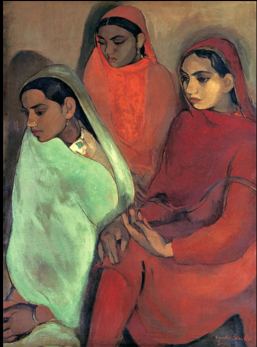

Modern Indian Painting blends traditional Indian themes with contemporary techniques, reflecting cultural heritage, social issues, and individual creativity on a global stage.
1. Colonial Era (18th–19th Century):
- Western techniques like oil painting, perspective, and realism were introduced by British art schools.
- Raja Ravi Varma combined Indian mythology with European realism, creating a new artistic language.
2. Bengal School of Art (Early 20th Century):
- Led by Abanindranath Tagore, this movement revived Indian traditions and rejected Western academic styles.
- Artists used wash techniques and spiritual themes inspired by Ajanta frescoes and Mughal miniatures.
3. Progressive Artists' Group (Post-Independence, 1947):
- Founded by artists like F.N. Souza, M.F. Husain, and S.H. Raza in Bombay.
- Embraced modernism, abstraction, and experimentation in Indian art.
4. Contemporary Era (Late 20th–21st Century):
- Indian artists gained international recognition with diverse styles, digital art, and global exhibitions.
- Raja Ravi Varma: Known for mythological themes with European realism.
- Amrita Sher-Gil: Pioneer of modern Indian art, combining Indian and Western styles.
- M.F. Husain: Famous for bold, modernist depictions of Indian culture.
- S.H. Raza: Celebrated for abstract art inspired by Indian philosophy.
- Tyeb Mehta & F.N. Souza: Known for powerful modernist expressions.
1. Fusion of Indian themes with Western realism, abstraction, and modernism.
2. Use of oil paints, acrylics, watercolors, and mixed media.
3. Diverse subjects: mythology, rural life, urbanization, social issues, and spirituality.
4. Experimentation with styles: realism, cubism, abstract expressionism.
5. Global appeal with exhibitions worldwide.